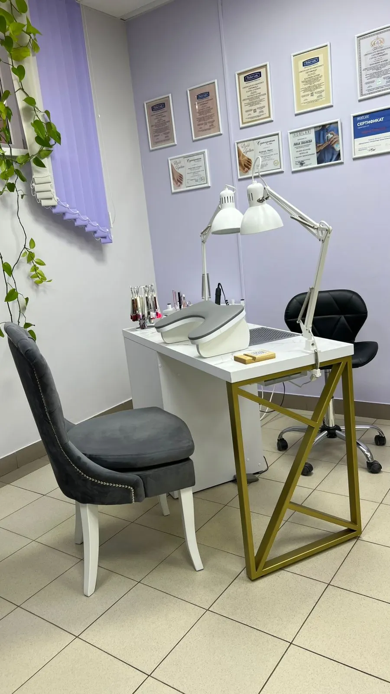
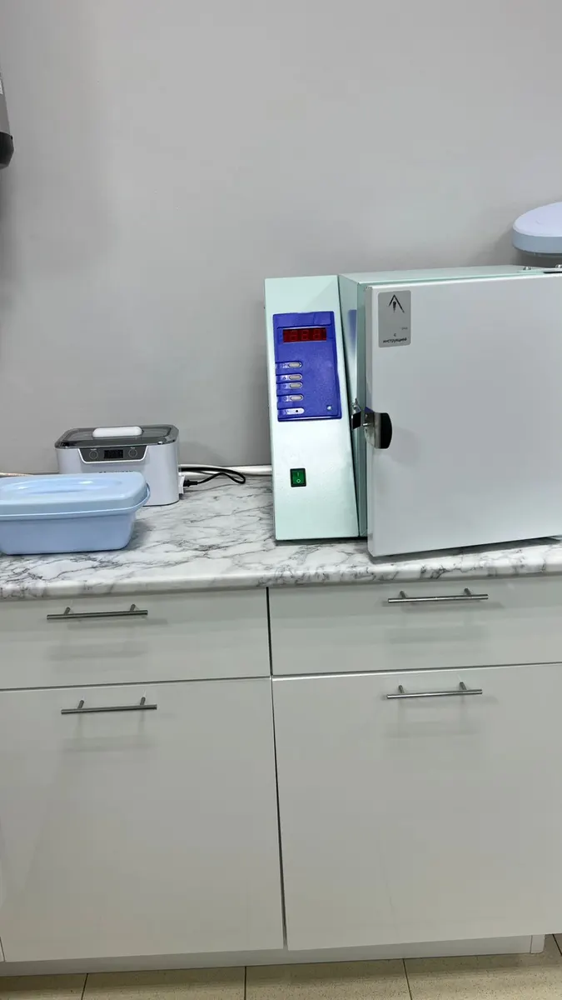
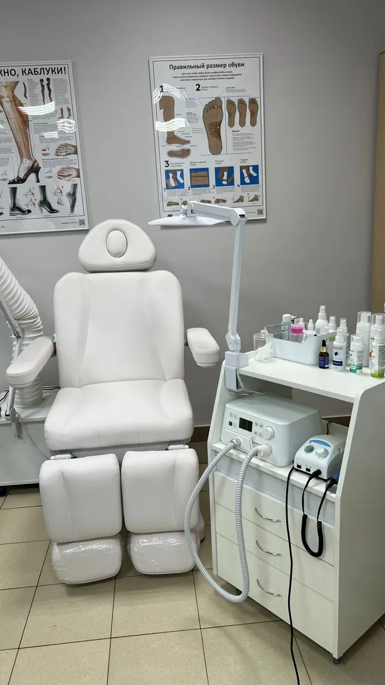
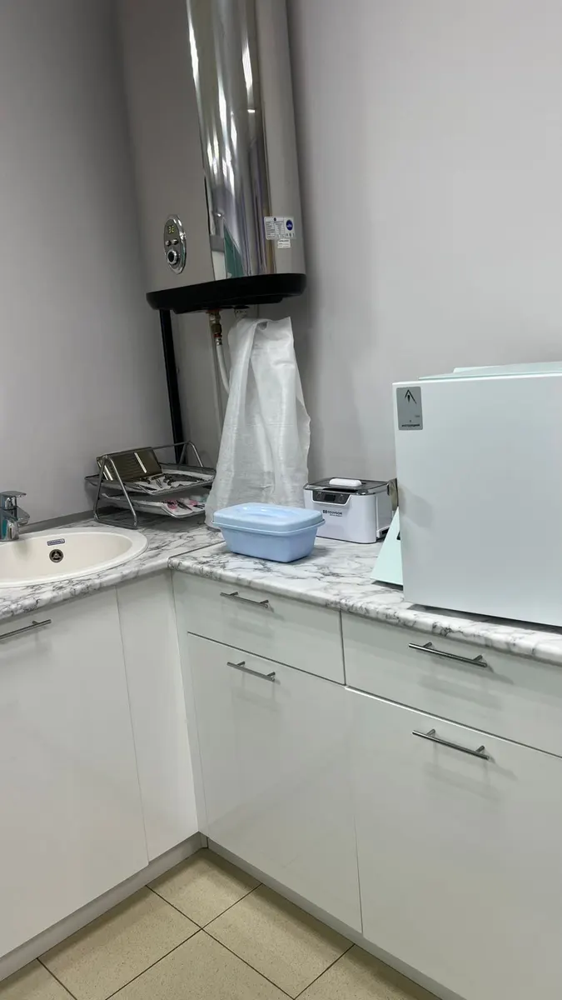

Школа педикюра · Калуга, улица Карла Либкнехта, 10А
Педикюр и подология в Калуге - цена до записи
Мастер Мария: сложные ногти и стопы, стерильные инструменты на столе. Запись в WhatsApp.
- Цена названа до записи
- Рейтинг 4,4 на Яндекс Картах
- Стерилизация видна на фото

Цена названа до записи
Педикюр и подология. Цены от представителя студии, на карточке отмечено «давно не обновлялось», поэтому итоговую сумму подтвердим при записи.
Педикюр
- Педикюр эстетический с покрытиемлак, гель-лак, плёнки2 500 ₽
- Педикюр с препаратами ROSILAKбез покрытия, с оздоравливающими препаратами2 000 ₽
- Обработка пальчиков с покрытиемгель-лак, лак, плёнки1 700 ₽
- Обработка пальчиков без покрытия1 200 ₽
- Глянцевание ногтей ROSILAKавторская техника500 ₽
Подология
- Обработка вросшего ногтяот 1 300 ₽
- Исправление врастающего ногтя системой Light Systemпрозрачная коррекционная пластинаот 2 500 ₽
- Удаление стержневой мозоли и разгрузка800 ₽
- Разгрузка стопы при трещинах1 000 ₽
- Обработка сложных стоп3 000 ₽
- Зачистка онихолизиса500 ₽
- Протезирование ногтяот 500 ₽
- Обработка бородавкиот 500 ₽
- Установка тампонады300 ₽
Цены с карточки студии на Яндекс Картах (источник: представитель организации, снято 21.10.2026). Время процедур называем при записи.
Как записаться
- 01
Выбираете услугу, день и время
В форме ниже на странице. Цена видна сразу.
- 02
Сообщение откроется в WhatsApp
Текст уже набран: останется отправить.
- 03
Мария подтверждает запись
Согласуете время. Можно и позвонить: +7 (964) 147-00-05.



Почему в студии здоровых стоп
Подология с ценой
Вросший ноготь, мозоли, трещины, онихолизис, протезирование ногтя: по каждой позиции цена названа выше, до записи.
Стерильность видна на фото
В кабинете стоят сухожар и ультразвуковая мойка, рядом раковина и лотки. Кадры ниже сделаны в самой студии.
К мастеру, которого знаете
В отзывах клиентки называют Марию по имени, пишут «не первый год» и возвращаются.
Спокойная обстановка
Белое педикюрное кресло, Wi-Fi, телевизор. Можно прийти с собакой: разрешены все животные.
Отзывы с Яндекс.Карт
«Очень хороший салон и мастер! Не первый год пользуюсь услугами Марии. Всегда все очень качественно. В салоне чисто и уютно. Мастера рекомендую!»
Елена Ч. · 25 ноября 2025
«Большое спасибо мастеру Марии, очень профессиональный мастер, внимательный и доброжелательный человек. Буду теперь ходить только в этот салон. Всем рекомендую.»
Ольга Окунева · 2 декабря 2025
«Отличный мастер, помогла с проблемными ногтями. Спасибо!»
Полина Р. · 28 августа 2025
Отзывы с карточки на Яндекс.Картах, без правок.
Частые вопросы
Сколько стоит педикюр?
Эстетический педикюр с покрытием - 2 500 ₽, с препаратами ROSILAK без покрытия - 2 000 ₽, обработка пальчиков с покрытием - 1 700 ₽, без покрытия - 1 200 ₽.
Сколько стоит обработка вросшего ногтя?
Обработка вросшего ногтя - от 1 300 ₽, исправление системой Light System - от 2 500 ₽. Точную сумму назовём при записи.
Есть ли маникюр?
В прайсе студии маникюра нет: здесь педикюр и подология. Если нужен маникюр, спросите в сообщении.
Как записаться?
Выберите услугу, день и время в форме и отправьте сообщение в WhatsApp - оно уже набрано. Или позвоните: +7 (964) 147-00-05.
Как оплатить?
Наличными, банковским переводом или через sms-платёж.
Где находится студия?
Калуга, улица Карла Либкнехта, 10А, офис 1, цоколь жилого дома. Вход и помещение недоступны для коляски. Работаем с 9:00 до 18:00, воскресенье - выходной.
Выберите услугу и время
- Адрес
- улица Карла Либкнехта, 10А, офис 1 (цоколь), Калуга
- Часы
- пн-сб 9:00-18:00, воскресенье выходной
- Телефон
- +7 (964) 147-00-05